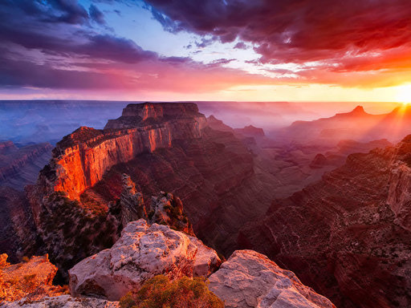

Grand Canyon Location
The Grand Canyon is roughly 18 miles wide, 277 miles long, and is roughly about 1 mile deep. It is a major attraction for people all over the world. It is especially popular with campers or travelers.
The Grand Canyon is in what state
The Grand Canyon is located in one of the best states in the United States of America. This state is Arizona.
How was the grand canyon formed?
The Grand Canyon was formed over sixty million years ago. The entire Colorado Plateau and the Rocky Mountains rose from tectonic activity. Then, roughly 6 million years ago, the Colorado River was formed by water that rushed off the Rockies. The Canyons were carved over time by the river cutting into it.
How to get there?
To get here, you need to travel towards the northeastern corner of the state of Arizona. This is in the United States of America. The Grand Canyon is divided into two locations: The North Rim and the South Rim. Whenever you plan to visit, be sure to know which rim you want to visit because it is a four and a half-hour drive between both. To get to the South Rim, I would suggest taking one of the few flights in from Phoenix which would only be an hour and a half. If you take this route, you will be in the Grand Canyon Village which is the main means of attraction there. To get to the Northeastern Rim, I would suggest taking the las vegas route. A rough estimate of Five million people visits the South Rim and roughly one million visits the North Rim.
What to do there?
Boating

You can choose between a motorized raft or choose to do it manually with a paddle-raft. I honestly think it is best when I see people using the paddle-raft as they keep the peace on the water. It isn't rare to see more than one paddle-raft close to each other with strangers chatting it up. Nothing feels better than having the river take you on a journey on the crystal or lava falls in an 18-foot oar-rig. You will be amazed how time goes by when you just lay there in your raft and just enjoy the scenery. If you are not the type of person to do it yourself then some companies do river tours like OARS and AZRA. They charge around $2,000 to $6,300 and the time ranges from three to 18 days.
Hiking

If you choose to go hiking in the South Rim, the best place to go to is the South Kaibab Trailhead. It is roughly a seven-mile hike that leads towards the river but you can choose to go the popular route of 1.8 miles round-trip to the Ooh Aah Point. There is a trail called Widforss Trail which is five miles along the rim and this trail goes through ponderosa pine and aspen groves to Widforss Point. You have many viewing options of jagged buttes, sheer, the battlements of Transept Canyon, or the Zoroaster Temple.
You might choose to take the remote arduous Thunder River Trail which some say is the most astonishing backpacking trip. This route is very popular and would be a good choice for those who want an average mile hike. If you choose to take the ultimate journey which is hiking from rim to rim which you will go all the way to the river, then you would cross the bridge at Phantom Ranch, then you would end up on the other side. The seasoned hikers try knocking the journey out in a day. The rest of us might opt to start at the lower south rim, go through the Bright Angel Trail, and then through the North Kaiba towards the North Rim Lodge. All of this adds up to a total of 21 miles.
But then there are still some more adventurous hikers out there that go from rim to rim to rim. If you decide to make this harsh hike, then be sure to have somebody ready to pick you up on the other side.
Trail Riding

Trail riding in the grand canyon is a very fun thing to do. You can take the steep trail just west of the Bright Angel Lodge and you will get to the Plateau point where you will get to see great views of the river. The Bright Angel Trail is a little over 6 miles long in each direction and should be taken into consideration before making the trip. I would advise anyone who decides to take this trip to plan on making the trip is over 2 days as it is too hard for some to do it all in one day. Be prepared with plenty of water and camping gear to last at least 3 days. You will get to stay overnight at the Phantom Ranch and get a lunch break at Indian Garden.
The cost for the overnight stay, 5 1/2 hour, and 10 1/2 hour ride will cost $588.43 per person. There is also the Xanterra Parks & Resorts that offers different types of mule rides that have different prices. You can visit its website for more details of how to book your reservation.